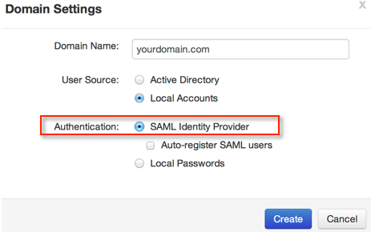
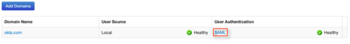

Sign into BitGlass using your credentials.
Select People > Domains.
Under Domain Settings, select SAML Identity Provider as the authentication type, as shown below.
In the User Authentication column, select SAML, as shown below.

Copy the following information to the SAML IDP Login URL field, shown above.
Sign into the Okta Admin dashboard to generate this value.
Copy the following information to the SAML IDP Logout URL field, shown above.
Sign into the Okta Admin dashboard to generate this value.
Save the Token Signing Certificate (PEM format) shown below, and then upload it by selecting the Choose File button, shown above.
Sign into the Okta Admin dashboard to generate this value.
Done!